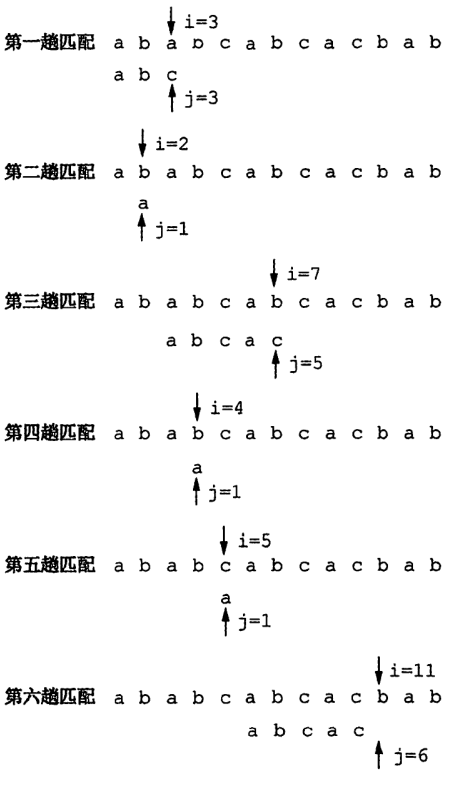

串的匹配
bruteforce
O(mn)

kmp
O(m+n)
最大相等真前后缀
求出输入字符串最大相等真前后缀的长度
1
2
3
4
5
6
7
8
9
10
11
| def max_fix(s):
n = len(s)
if n == 0:
return -1
for size in range(n - 1, 0, -1):
if s[: size] == s[-size:]:
return size
return 0
|
以下字符串,数组下标从0计数
next
1
2
3
4
| def get_next(p):
n = len(p)
return [max_fix(p[: tail]) for tail in range(n)]
|
next_val
1
2
3
4
5
6
7
8
9
10
11
12
| def get_nextval(p):
n = len(p)
next_val = get_next(p)
for i in range(1, n):
j = next_val[i]
if p[i] == p[j]:
next_val[i] = next_val[j]
return next_val
|
匹配
1
2
3
4
5
6
7
8
9
10
11
12
13
14
15
16
17
18
19
20
21
22
| def kmp(s, p, get_nxt):
nxt = get_nxt(p)
i = 0
j = 0
while i < len(s) and j < len(p):
if j == -1:
i += 1
j = 0
elif s[i] == p[j]:
if j == len(p) - 1:
return i - j
i += 1
j += 1
else:
j = nxt[j]
return -1
|
转换
下标从1计数时,next/next _val元素全部+1